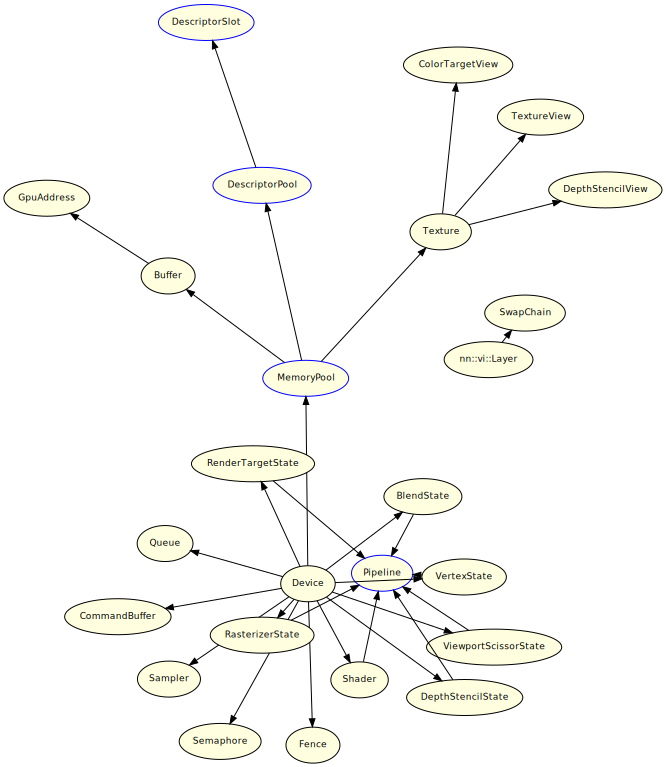

Construction Model
Construction Model
This section describes the dependency relationships for building an object.
Most objects are built from devices.
Construction Model Diagrams
These relationship diagrams are created by each GFX class.
The start point of the arrow is the build source and the end point is the build destination.
Devices that are build sources other than a device also request a device. This is omitted for readability.
The objects in blue boxes are not required for some low-level graphics APIs.
When it is time to destroy the objects that are the build source, first destroy all objects that are the build target.

CONFIDENTIAL